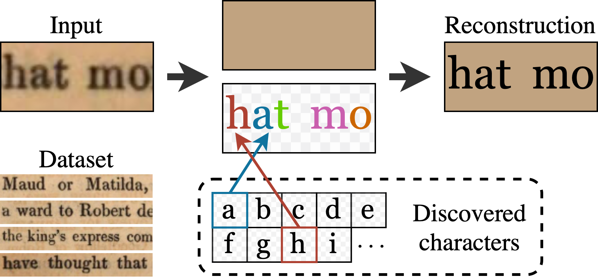
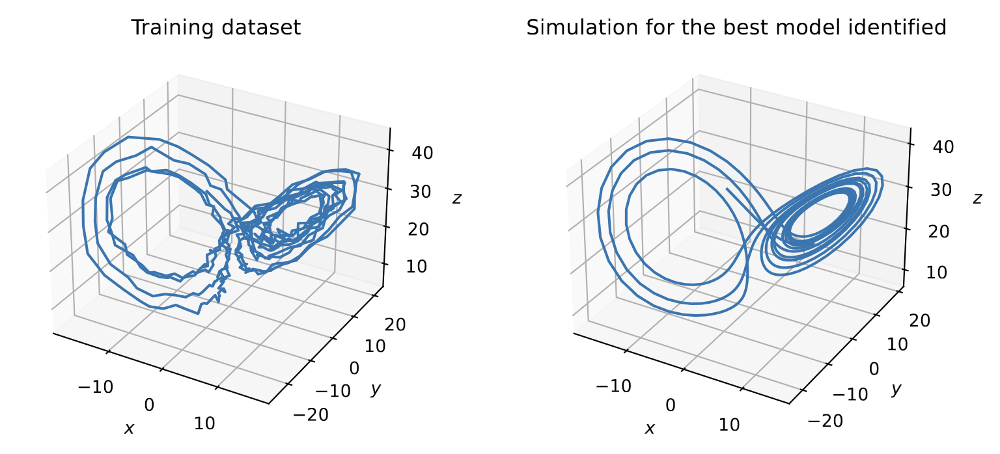
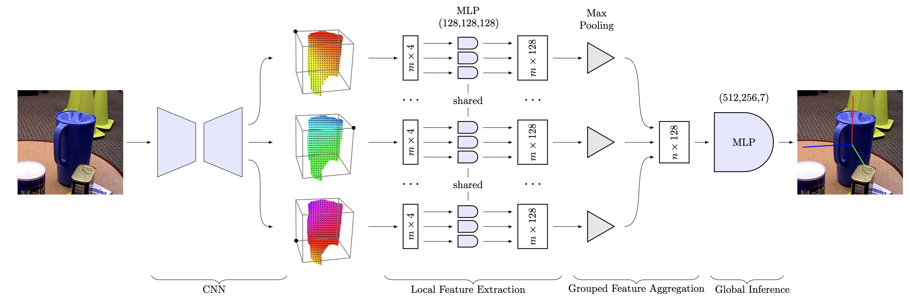
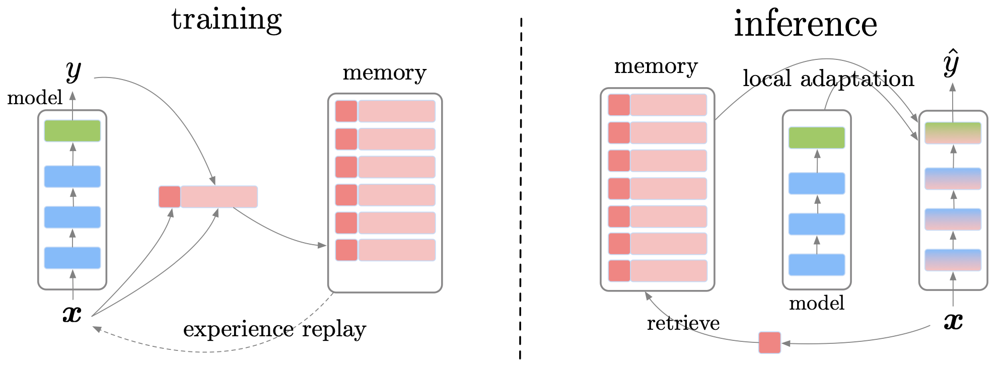

|
About Experiences Education Publication Projects |
AboutI am a Master's degree student in Mathematics, Machine Learning & Computer Vision at the master MVA from ENS Paris-Saclay. I previously graduated from École Centrale de Lyon with an Engineering degree in Applied Mathematics. I would like to pursue my studies with a PhD in Computer Vision! I am curious about many research directions in CV and I have recently enjoyed working with Pr. M. Aubry in the Imagine team on unsupervised and weakly-supervised problems with applications in text-line analysis. I am currently pursuing my Master's Thesis at Princeton University, working with Pr. J. Deng. Research experiences
May - Sep. 2023
Master's Thesis advised by Pr. J. Deng in the Princeton Vision & Learning Lab
Subject: 3D Vision, Scene Representation. 
Apr. - Sep. 2022
May. - Aug. 2021
Research internship advised by Pr. E. Dellandrea at CNRS LIRIS
Subject: Real-time Visual Scene Understanding for Robotics. EducationI am also passionate about Mathematics! I pursued a double-curriculum with Lyon 1 University during my engineering studies, getting a B.Sc. in Mathematics and an M.Sc in Applied Mathematics. Publication

The Learnable Typewriter: A Generative Approach to Text Analysis
Y. Siglidis, N. Gonthier, J. Gaubil, T. Monnier, M. Aubry arXiv 2023 Webpage Paper Code We introduce a generative approach for character analysis and recognition in text lines that can perform using little to no supervision. ProjectsResearch projects

Sparse variable selection in Lasso using Knockoffs
J. Marlhens, J. Gaubil. Advisor: Pr. Y. de Castro (Institut Camille Jordan) Winter term 2022 Report Study of the control of False Discovery Rate via Knockoffs as proposed by R. Barber and E. Candès, and application to System Identification.

Source : [1]
Object detection and 6D pose estimation for real-time Robotics
Advisor: Pr. E. Dellandrea (CNRS Liris) May - Aug. 2021 Report (french) Literature review and evaluation of baseline Deep Learning approaches for real-time Object detection and 6D pose-estimation. Research internship on the Robotics project Chiron in the LIRIS team, that aimed at creating a semi-autonomous robot assistant for hospitalized patients. My contributions consisted in a 40 pages literature report of the field as well as fixing the codebase of an existing approach (FS-Net, CVPR'21) that further served as a baseline for the project. My work was then used as a basis by an incoming PhD student.

Source : [2]
Incremental Deep Learning
J. Gaubil, Clément Martinelli. Advisor: Pr. E. Dellandrea (CNRS Liris) Academic year 2020 - 2021 Report (french) Study of approaches to alleviate Catastrophic Forgetting when training an already optimized Neural Network on new samples or tasks. Academic research project during 2nd year at École Centrale de Lyon. We delivered a 50-page report over core existing Incremental Deep Learning techniques and proposed a theoretical improvement of one of them (GEM). Course projectsHere are listed some relevant projects completed as part of course evaluations during my curriculum.
Neural Point-based rendering and View Synthesis MVA, Point Cloud and 3D Modelling course.
Report Study of the recently proposed Scuplted Neural Points. Evaluation of the proposed sculpting mechanism, ablation study and proposition of improvements. Self-Supervised Learning of Visual Representations MVA, Computer Vision course with Manh-Dan Pham. Report Study of the recently proposed VICReg and SimCLR, evaluation of the representations learned by VICReg on a challenging downstream task of Fine-grained image Classification and in a small dataset setting. Weakly-supervised analysis of text-line images MVA, Deep Learning course. Report Code Developments of the Learnable Typewriter by using several learned prototypes for each character instead of a single one, which then made it to the final paper. Design of a richer transformation scheme by using Thin Plate Spline transformations. Denoising Diffusion Implicit Models MVA, Generative Models for images with Thomas Dujardin, Thibault Richard. Report Study of Denoising Diffusion Implicit Models, by deriving and analysing its forward process and experimenting different subsamplings for the generative process. We also propose an original derivation of the backward process for Gamma-DDIMs. |